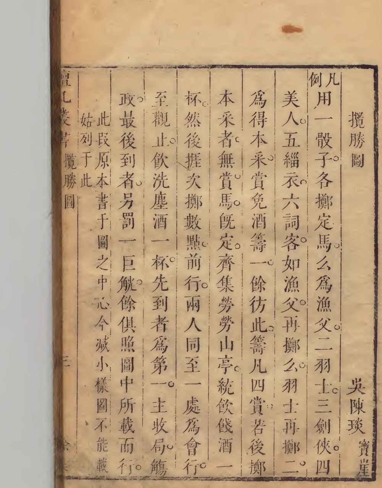
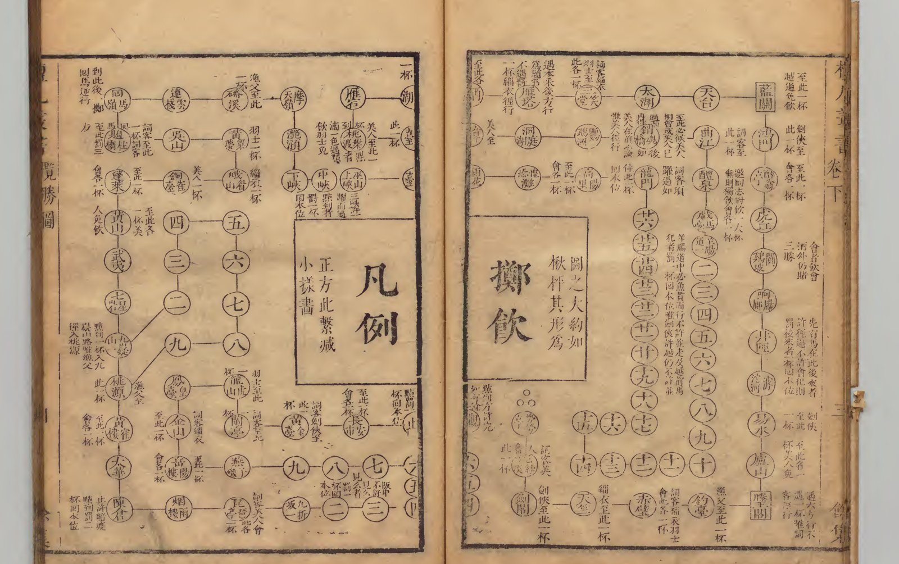
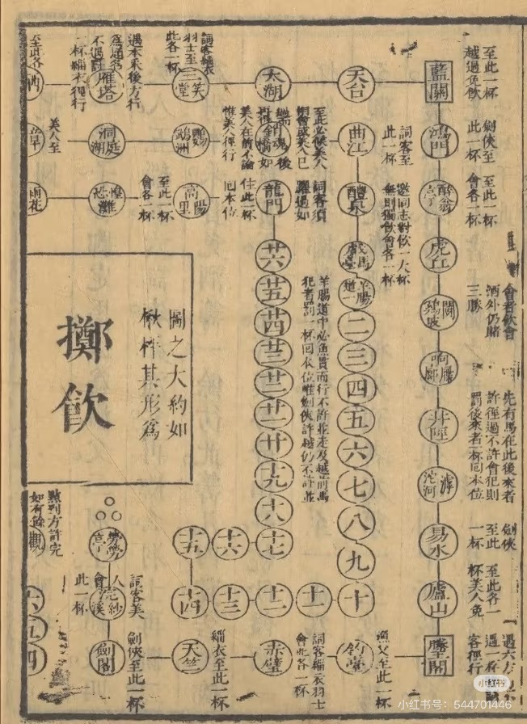
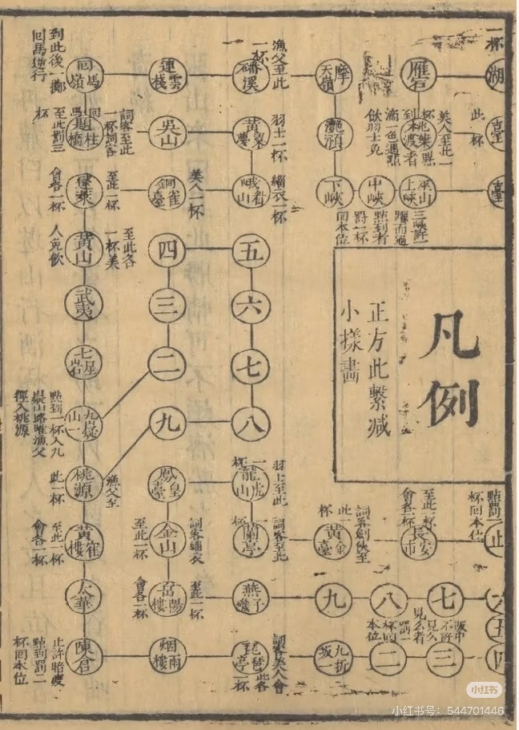

玩法
下面先给一套能照着讲的规则书，依据吴陈琰《揽胜图》凡例。一枚骰子，按点数沿名胜走；落到哪一格，就按图上写的赏罚来。高兆本另有一套，定马和终局赏罚不同，不要并成一种印本。
丛书本只有缩小样图，不是原图全幅；格上具体赏罚仍以本件图文为准。本页是工作笔记，不是已定稿的比赛规程。


规则书 · 吴陈琰本
适用：识典 HY6663 所录凡例；《檀几丛书》余集卷下同系文本。字句以识典本章为准。
1. 你需要什么
- 一枚六面骰子。
- 每人一枚棋子（「马」），用来标自己走到哪。
- 一张《揽胜图》（路径＋格名＋格旁赏罚）。酒席上通常还备酒筹／酒杯，因为赏罚多是饮罚。
- 人数：凡例按六种角色写定马；人少时可少掷几种，但本页不另编家规。
2. 定马：先掷出你是谁
每人各掷一次骰子，点数决定角色。掷到的点数就是你的「本色」。
| 点数 | 角色 |
|---|---|
| 么（1） | 渔父 |
| 二 | 羽士 |
| 三 | 剑侠 |
| 四 | 美人 |
| 五 | 缁衣 |
| 六 | 词客 |
高兆本的么／五／六对应别的角色，见表后「高兆本哪里不同」。两系对照见揽胜图首页。
3. 本采：再掷到自己的点数
定马之后，若某人再掷出和自己角色相同的点数（例如渔父再掷出么，羽士再掷出二），叫得「本采」：赏免酒筹一枝。凡例写「筹凡四赏」——一共有四次这样的赏。若这四次赏完了，后来再掷到本采，就不再赏。
本采是定马后的本色奖励，不是走路时的额外步数。走路仍按当次掷出的点数前进。
4. 开局
- 角色定好以后，大家齐集劳劳山亭（他处常写作劳劳亭）。
- 先一起饮饯酒一杯。
- 再挨次掷骰，按点数沿图前行。
5. 怎么走
- 轮到你时掷一枚骰子。
- 点数是几，就沿名胜路径向前走几格（或按图上标明的走法走；样图上个别路段另有禁并走等规定，以图文为准）。
- 落到某一处，就按该处所载的赏罚执行——常见是饮几杯、免饮、回本位等。凡例只说「余俱照图中所载而行」，没有另写一套总表。
- 赏罚常与角色有关：同一地点，渔父、剑侠等可能待遇不同。读格旁小字时要对上自己的角色。
6. 「会」
两人走到同一处，叫「会」。凡例点明了这件事；本件凡例没有再写「会」之后还要多饮几杯。具体是否另有图注，以图为准；不要用别的酒令书擅自加戏。
7. 终局：观止
- 终点是共用的观止（不是每人各停一处）。
- 到观止的人饮洗尘酒一杯。
- 先到的人为第一，主持收局觞政。
- 最后到的人另罚一巨觥。
- 其余人仍按图中所载结算。
8. 一句话流程
掷骰定角色 →（可遇本采免酒筹）→ 在劳劳山亭饯饮 → 轮流掷点走路 → 照格赏罚；两人同格为会 → 先到观止者收局，末到者罚巨觥。
高兆本哪里不同
高兆《揽胜图谱》常见于《昭代丛书》一系。识典书号 ZDCS11036 能读到凡例。不要把它写成高兆原刻本，也不要和吴本混用。
- 定马不同：么词客、二羽士、三剑侠、四美人、五渔父、六缁衣。与吴本相比，么、五、六对调了角色。
- 开局有彩筹：六人先各出彩筹十枝存公所，再定马；齐集劳劳亭，挨次递掷，照点前行。
- 终局分筹：先完者分去公所彩筹一半，后完者仿此，最末者不准分。这是筹赏，不是吴本那套「先到主觞政／末到巨觥」的同一写法。
- 分角色止处：金学诗《牧猪闲话》、徐珂《清稗类钞》记词客至瀛洲、羽士至蓬莱岛、剑侠至青门、美人至天台、渔父至桃源、缁衣至五老峰。图谱正文还没有逐项对完；不要据此改吴本的共用「观止」。
原文摘录
吴陈琰凡例（识典 HY6663）
一骰子各掷定马么，为渔父，二羽士，三剑侠，四美人，五缁衣，六词客。如渔父再掷么，羽士再掷二，为得本采，赏免酒筹一，余彷此，筹凡四赏。若后掷本采者无赏。马既定，齐集劳劳山亭，统饮饯酒一杯，然后挨次掷数点。前行两人同至一处为会，行至观止，饮洗尘酒一杯。先到者为第一，主收局觞政，最后到者另罚一巨觥，余俱照图中所载而行。
识典 HY6663。本章。标点为阅读方便所加，以原书／识典图版为准。
同章题辞：王丹麓曰「可以为卧游之资」——这是题辞措辞，不是另一套规则。张山来曰「可不烦济胜之具矣」——同样不是玩法条款。
高兆凡例摘句（识典 ZDCS11036）
此图，须六人先各出彩筹十枝，存贮公所，然后用一骰子，各定马么为词客，二为羽士，三为剑侠，四为美人，五为渔父，六为缁衣。分马既定，齐集劳劳亭，挨次递掷，照点前行。
先完者分去公所彩筹一半，后完者仿此，惟最末者不准分。
识典 ZDCS11036。本章
词客至瀛洲止，羽士至蓬莱岛止，剑侠至青门止，美人至天台止，渔父至桃源止，缁衣至五老峰止。
标点依维基文库《清稗类钞》赌博类「掷揽胜图」。打开这一类。《牧猪闲话》同一段也是这六处，蓬莱作「岛」。打开《牧猪闲话》。《牧猪闲话》写「其局亦从升官图化出」，《清稗类钞》写「脱胎于《升官图》」——那是清人的话，本笔记不把它当成已证源流。类型对照见研究。
试用工具
另有一套圆格路径图的本地工具：录文台（可编辑加点连线）与掷饮试用（热座可玩）。玩法骨架依吴本凡例；底图印本系属待核，不要当成吴本或高兆本原件。


样图与其他文本
《檀几丛书》收的是缩小样图。编者说大幅「不能载」。样图不能当成原来的全图。内阁文库请求号 371-0027 可见凡例与样图。官方记录。更多线索见对象与馆藏。
《酒令丛钞》卷三也有《揽胜图》凡例，定马次序与吴本相同，终局也写到观止。其余字句还没有和 HY6663 逐字对校。CADAL11202547 卷三，CADAL02120143 目录。
待核识典书号 NCL153500022A 的现有 OCR 里没有看到定马句。这一列先空着。打开这一章。它不是上面的 ZDCS11036。